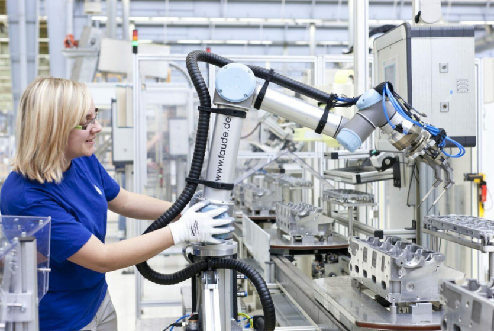

Automation is reshaping the way we work. Robots, algorithms, and artificial intelligence are redefining jobs, skills, and the role of humans in the economy. For some, this change is a threat, a sign that jobs will disappear. For others, it’s a chance to rethink how we work and live, and to build a more balanced relationship between humans and technology. So, what does the future of work look like in an automated world?
Automation isn’t new. Since the first industrial revolution, machines have replaced humans in repetitive tasks. What’s different today is the kind of work being automated. Physical robots now dominate factory lines. Software manages accounting, algorithms translate, write, diagnose, and even drive. Even intellectual jobs, once considered safe, are being transformed. According to McKinsey, almost half of current work tasks could be automated by 2040. That doesn’t mean half of all jobs will vanish, but that the content and nature of work will drastically change.
Every technological revolution destroys some jobs but creates new ones too. That’s the logic of creative destruction. The most repetitive and predictable tasks are the first to go. But new roles are emerging: robot maintenance technicians, AI engineers, data analysts, user experience designers. Automation doesn’t eliminate work; it shifts it. The real challenge is adaptation learning to work with machines, not against them.
Work in the future will be less about repetition and more about invention. Employers will look for creativity, curiosity, critical thinking, and teamwork. Technical expertise will still matter, but it must be combined with emotional intelligence and mental agility.
Learning will no longer stop after graduation. People will need to keep learning, adapting, and mastering new tools instead of being ruled by them. Education, too, must evolve not just to teach, but to help students learn how to learn.
Automation is transforming not just jobs, but the meaning of work itself. If machines can produce faster, maybe humans can work less. Higher productivity could mean more time for creativity, family, or personal growth. Remote work, flexibility, and hybrid careers are becoming the new norm. Some economists even suggest an universal basic income to provide stability in a rapidly changing labor market. But one question remains: will the benefits of automation be shared fairly, or will they concentrate in a few hands?
The future of work is neither dystopian nor utopian it’s transformative. Humans won’t disappear; they’ll evolve. Their role will become more creative, more strategic, more collaborative. Used wisely, automation can be an ally. But that will require investment in education, training, and social responsibility. Because the future of work doesn’t depend only on machines. It depends on how we choose to use them.
